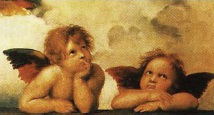

Leonardo da Vinci ve Michelangelo ile birlikte Raphael (1483-1520), İtalya’daki Yüksek Rönesansın en büyük üç sanatçısından biri olarak düşünülür.

Urbino yakınlarında doğan Raphael, babası Giovanni Santi tarafından eğitildi. Çocuğun dehasını fark eden Giovanni, onu o zamanlar Umbria bölgesinin önde gelen bir ressamı olan Pietro Perugino’nun atölyesine gönderdi. 1504’te Raphael, 16. yüzyılın başlarında İtalya’nın sanat merkezi olan Floransa’ya taşındı. Michelangelo’nun ve Leonardo da Vinci’nin eserlerine çalışan Raphael, tümüyle kendine ait bir tarz bulmak üzere her ikisinden de belli unsurları alarak birleştirdi.
1508’de Raphael, Papa II. Julius tarafından Papa süit odalarının üzerinde çalışmak üzere Roma’ya çağrıldı. Muhtemelen Papa’nın Kütüphanesi olan ilk odada, Raphael dört temel alan olarak düşündüğü ilahiyat, felsefe, hukuk ve şiir üzerine freskler yaptı. Bunların en meşhurları olan ve sonradan “Atina Okulu” adını alan felsefe geniş bir mimari alanda ve antik Yunan’ın tüm büyük düşünürleri tarafından çevrelenmiş şekilde konumlanmış Platon ve Aristoteles’i sunar.
Raphael, kısa ama üretken yaşamının geri kalanında Roma’da yaşadı. Pek çok ustalık eseri ve muhteşem resmin yanında, o aynı zamanda 1512’de Villa Farnesina için yapılması istenen ve dev Polyphemus tarafından kovalanan peri kızını betimleyen “Galatea” gibi mitolojik sahnelerin de resmini yaptı. Buna benzer şekilde Raphael, bir mimar olarak da ün kazandı ve ilk baştaki tasarımcısı Donato Bramante’nin 1514’te ölmesiyle yeni Saint Peter Kilisesi’nin inşasına gözetmenlik yapmak üzere atandı. Ayrıca Raphael’den ünlü Rönesans bilimsel eseri olan “Saray Adamının Kitabı”nda (1528) bahseden yazar ve önemli bir diplomat olan Baldassare Castiglione’nin (1478-1529) resminde de görülebileceği gibi yetenekli bir portre ressamıydı.
Rapahel’in en ünlü Bakire Meryem ve çocuğu imgelemlerinden biri olan “Sistine Madonna” (1512-1514) her iki figürün yüzündeki alışılmadık şaşkın ifadeler nedeniyle pek çok tartışmaya yol açtı. Son zamanlarda yapılan bir araştırma, eserin kilisedeki orijinal yerinin, figürlerin bir çarmıha bakacak şekilde tasarlandığını gösterdi.
Raphael için genelde üç büyük Rönesans ustasının en klasiği olduğu söylenir. Alman bilgini Johann Wolfgang von Goethe (1749-1842), aslında, Raphael’in Yunanlıları taklit etmesinin gerekmediğini çünkü onlar gibi hissetmenin ve düşünmenin onun için doğal olduğunu iddia etti.
EK BİLGİLER:
1. Raphael’in ilk biyografisi, Giorgio Vasari’nin Sanatçıların Yaşamları (1550) adlı kitabında görünür.
2. “Atina Okulu”nda Eflatun parmağını soyut, ruhani kavramlara olan ilgisini göstermek üzere yukarı işaret ederken Aristoteles ise somut cisimlere ve dünyevi işlere yönelik tercihini göstermek üzere eliyle zemini işaret eder.
3. Raphael aynı zamanda Roma harabelerini, en göze çarpanı Neron’un Altın Evi’nin gömülü kalıntılarını “Domus Aurea”yı keşfetti.